梅吉のおもてなし [梅吉]
週末、我が家にお客様がいらっしゃいました。

「梅吉くんこんにちはー。いつもおとーさんのFBで見てるよー！」
![[猫]](https://blog.ss-blog.jp/_images_e/101.gif) それはおおきに （思いっきりイカ耳(*>艸<)）
それはおおきに （思いっきりイカ耳(*>艸<)）
梅吉さんに会いたいって来てくれたんですよ。
緊張や遠慮することはありません。いつもの調子で行きましょうよ〜。
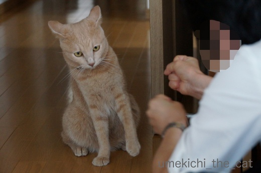
ほんまかいな あそぼういってくれはるけど がぶがぶしてもええんやろか・・・・・
（更なるイカ耳(*>艸<)）
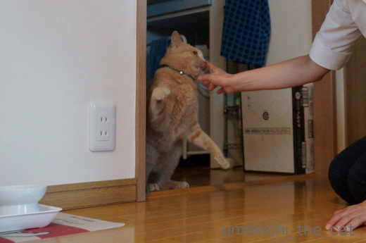
ほな かるくごあいさつや
猫ぱんちの５秒前ww
（猫ぱんちの瞬間、うまく写っていませんでした、残念！）
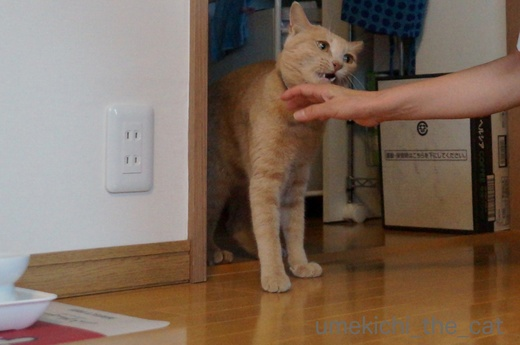
ぱんちのつぎはー がぶやで〜
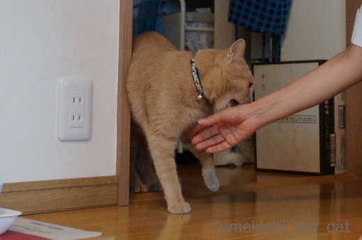
がぶ〜っ
多少遠慮がちですががぶ入りました！！
梅吉さん、いつもの調子出て来たんじゃないですか？
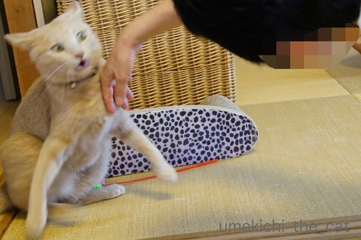
なんやわし むっちゃやるきでてきたで！！
ああ、目が「風神雷神」・・・・・
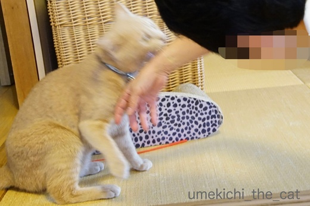
がぶや！がぶがぶ！！
ああ！！Σ(ﾟ◇ﾟ；)お客様相手に結構な勢いのかぶでした (^▽^;)
いつもは「そろそろ危ないな」という所で私が梅吉を引き止めるのですが
今回はおっとの高校時代のお友達だし梅吉に会いに来てくださったのだから
と手を出さずに見ていたのですが・・・
梅吉、お客様にも容赦しませんww
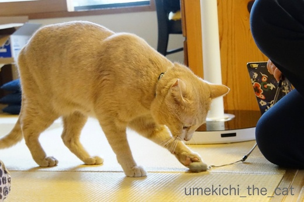
お客様のスマホ用“黒板消し”クリーナーに興味津々。
「隠れちゃって姿が見えなかったね」って言われちゃうより良いですよね？梅吉さん。
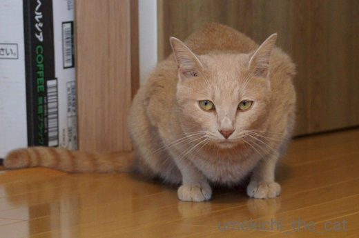
せやで うめきちりゅう おもてなししたったで
おっとのお友達、お仕事がてらではありましたが横浜からいらしたんですよ。
梅吉がぶの跡が赤い線になっていなければ良いのですが・・・・・
 ↑ガブッと一押し↑
↑ガブッと一押し↑
突然「モッツァレラチーズをつくる！」と言い出したおっと。
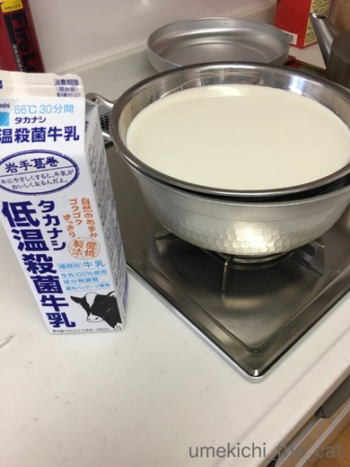
低温殺菌牛乳を使います。
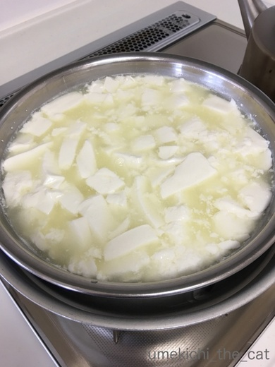
あれこれして
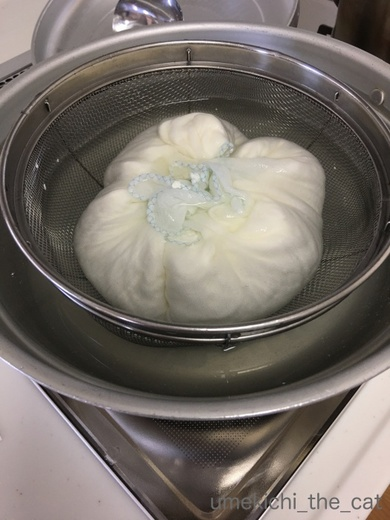
なんかそれらしくなって来た？
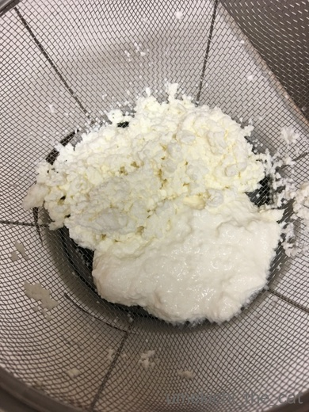
と思ったら、出来たのはカッテージチーズみたいなモッツァレラチーズもどき(^▽^;)
次、がんばろー！！
発酵食品って作るの難しいですよね。
我が家にはヨーグルトメーカーがあるのですが
時に上手く発酵しなくて「飲むヨーグルト」みたいなシャバシャバのヨーグルトが出来る事が。
手順はちゃんと踏んでいるのですが。なんでだろー。

「梅吉くんこんにちはー。いつもおとーさんのFBで見てるよー！」
梅吉さんに会いたいって来てくれたんですよ。
緊張や遠慮することはありません。いつもの調子で行きましょうよ〜。
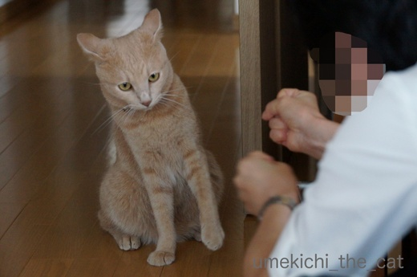
（更なるイカ耳(*>艸<)）
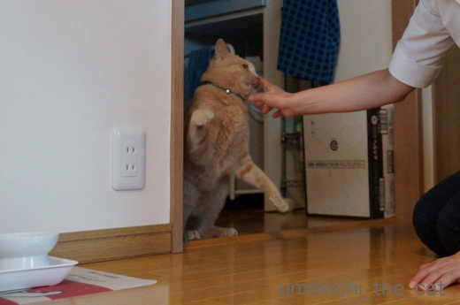
猫ぱんちの５秒前ww
（猫ぱんちの瞬間、うまく写っていませんでした、残念！）
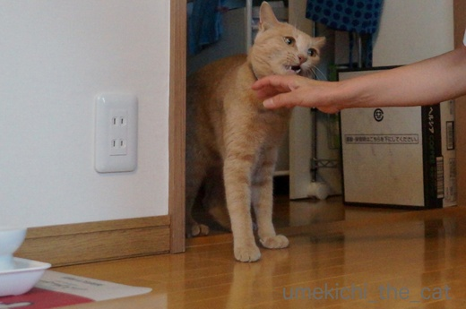
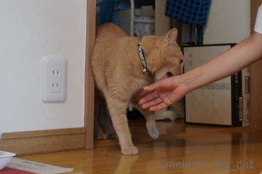
多少遠慮がちですががぶ入りました！！
梅吉さん、いつもの調子出て来たんじゃないですか？
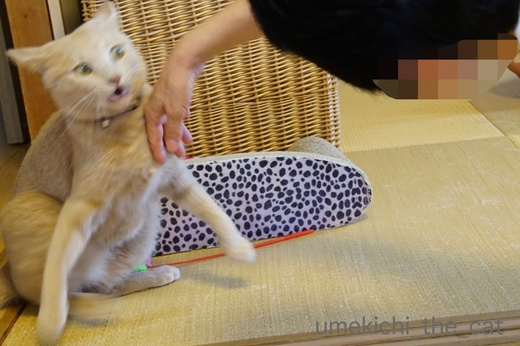
ああ、目が「風神雷神」・・・・・
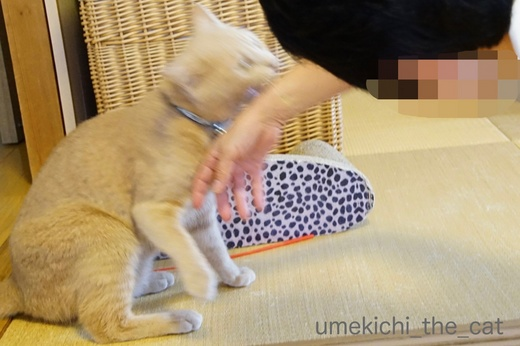
ああ！！Σ(ﾟ◇ﾟ；)お客様相手に結構な勢いのかぶでした (^▽^;)
いつもは「そろそろ危ないな」という所で私が梅吉を引き止めるのですが
今回はおっとの高校時代のお友達だし梅吉に会いに来てくださったのだから
と手を出さずに見ていたのですが・・・
梅吉、お客様にも容赦しませんww
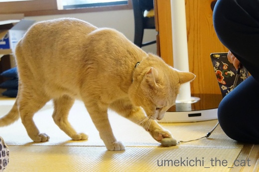
お客様のスマホ用“黒板消し”クリーナーに興味津々。
「隠れちゃって姿が見えなかったね」って言われちゃうより良いですよね？梅吉さん。
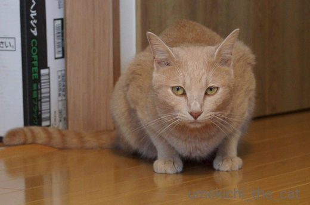
おっとのお友達、お仕事がてらではありましたが横浜からいらしたんですよ。
梅吉がぶの跡が赤い線になっていなければ良いのですが・・・・・
突然「モッツァレラチーズをつくる！」と言い出したおっと。
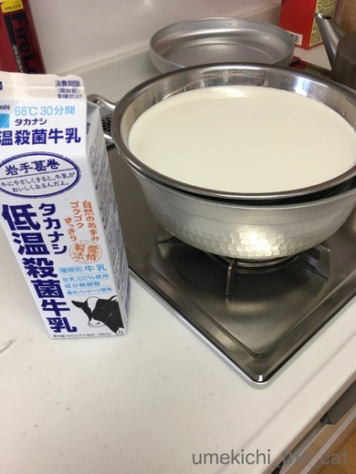
低温殺菌牛乳を使います。
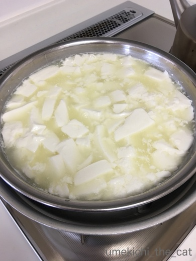
あれこれして
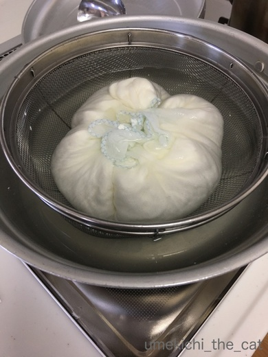
なんかそれらしくなって来た？
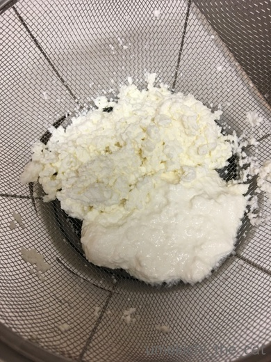
と思ったら、出来たのはカッテージチーズみたいなモッツァレラチーズもどき(^▽^;)
次、がんばろー！！
発酵食品って作るの難しいですよね。
我が家にはヨーグルトメーカーがあるのですが
時に上手く発酵しなくて「飲むヨーグルト」みたいなシャバシャバのヨーグルトが出来る事が。
手順はちゃんと踏んでいるのですが。なんでだろー。

カフェオレ色の梅吉

梅吉 2023年8月10日 永眠


梅吉と出会った譲渡会

犬猫の理由なき殺処分ゼロ
妄想広告
UMEKICHI 光

爆発的に早い！
時々攻撃的！
Thanks to Mr.Boss365
爆発的に早い！
時々攻撃的！
Thanks to Mr.Boss365

お出迎えの「顔」－！爆笑！
でも、ちゃんとすぐにおもてなしモードになるのが、愛されている育ちの良さを感じます♡（ガブでも）
できたてモッツァレラ、成功したらふるふるでクリーミーなのできそうですね！でも、この作品にも塩とオリーブオイルかけて、スプーンで食べたら、いいワインのあてになりそ♪
by Ginger (2017-09-11 16:11)
梅吉さん♪ おもてなし上手なのですね(*^_^*)
にゃんこは隠れる子が多いと
聞いていましたが
良いお仕事をしましたね♪
お友達も大喜びでしょうね！！
by きぃ (2017-09-11 16:36)
梅吉さんいつも困り顔ではあるけど、イカ耳だと尚更当惑感が出てて「どうしよ〜」と言ってるみたい。ガブガブしたのに怒られなくてちゃんと遊んでもらえたのですね。よかったよかった。
by zombiekong (2017-09-11 16:53)
ほんとだー！風神雷神の目になってるｗｗ
わたしも梅吉君にこんな風におもてなしされたーーーいｗ
大丈夫よ。手に赤い線がついても平気平気(笑)
by リュカ (2017-09-11 16:55)
ものすごいイカ耳でお出迎え、梅吉さん頑張ったんですね(*^▽^*)
猫好きなら手の赤い線は遊んでもらった記念、ぜ～んぜんOKですよ♪
ウチのも1歳ぐらいまでは、家にだれか来たら靴下の匂い嗅ぎまわったり、カバンに顔突っ込んだり、好奇心の方が買ってたんですが・・・。
年を重ねるとともにビビリに拍車がかかり、今はとりあえず隠れてしまいます。
辛うじておやつにつられて出てくることもありますが(^▽^;)
by ゆきち (2017-09-11 17:50)
梅吉さんはちょこっとだけ人見知りするけどすぐになれちゃうんですね！すんごく楽しそうね～
by みぃにゃん (2017-09-11 19:18)
初めての人にもガブでおもてなしをするなんて梅吉君社交的です(*^_^*)
by palpal (2017-09-11 19:22)
イカ耳が見事です。
梅吉さん流のお出迎え、よくわかりました(^-^;
うちの猫も、誰か来ると匂いを嗅ぎます。
でも、それだけです。
なので、梅吉さんの度胸？に感心しております(^^♪
by riverwalk (2017-09-11 21:00)
人見知りしない梅吉さん、偉いなあ。^^)
モッツァレラ、家庭でも作れるなんて知りませんでした。^^;
by yes_hama (2017-09-11 21:20)
梅吉さん、ど〜したの〜と思わず言ってしまいましたよ〜
神妙にしてイカ耳w、触られそうになって避けてるしww
「うめきちりゅう おもてなししたったで」って、お疲れ様でした。
もどきチーズ、美味しそうです。
by kiki (2017-09-11 22:34)
梅吉さん、ちゃんとホスト役やってますねぇ。
うちの子なら何処かに隠れちゃいます＾＾；
by ぽちの輔 (2017-09-12 06:43)
あらま！お見本のようなイカ耳(^^;
お友達も下僕をやられているのですか？
ネコ様のお相手の仕方をわかってらっしゃる(^_-)
by も〜 (2017-09-12 08:03)
梅吉さんは人見知りしないのかにゃ？
我が家の猫たちは、お客が来ると「上がっていけ」と言わんばかりに出迎えます。
by じゅらまろ (2017-09-12 11:27)
イカ耳になりつつも、ちゃんとご挨拶出来るなんてさすが「漢 梅吉」さんですねぇ(^O^)
梅吉さんに会いに来てくれたお友達は梅吉さんの猫パンチにガブガブの
洗礼を受けてきっと大喜びだったと思います(^_^)v
きっと赤い跡を見せながら「相手してくれた～！」と周りにアピール中ですね(^-^)
by ニッキー (2017-09-12 12:05)
Gingerさん＞お出迎え（玄関に走って行って脱走を企てる）
お遊び （自分のしたいガブ遊び）
お見送り（抱っこされてエレベーターホールに興味津々）
とフルコースで付き合ってくれた梅吉です＾＾
お誕生日ウィークはGingerさんご本人だったのですね！
遅ればせながらおめでとうございますヾ(*ΦωΦ)ﾉ
きぃさん＞梅吉の場合隠れるどころか「だれー！だれーー！！」と
近づいて行きます^^;
そのあとは靴下等の匂いをかぎまくる・・・と（汗）
今回の仕事ぶりは100点だったかな、と親ばか採点ですw
zombiekongさん＞イカ耳の現場に居合わせていたら
梅吉の後ろに「困惑！」「当惑！！」の吹き出しが見えていた事でしょう(*>艸<)
お客様に近寄ると大抵おかーさんに引き離されるので
「なんできょうはええんやろう・・・」と思っていたのかも。
ブログには載せませんでしたがちゃんとじゃらしで遊んでもらったんですよ＾＾
リュカさん＞いつでも梅吉がおもてなししますよーww
赤い線いっぱいつけちゃうから！！
我が家に来るときはパンスト禁止。（足ガブされて伝染するから）
ちょっと厚手の靴下で来てね(^_－)☆
ゆきちさん＞梅吉も（現在２歳ですが）もっと大人になると隠れるようになるのかなぁ。
もしそうなるとしたら「しらないひと こわい」ではなく「めんどくさっ」
が理由になるような気がします(^▽^;)
梅吉はオヤツに・・・つられまくりかと。
知らない人にも平気でついて行きそうですwww
みぃにゃんさん＞慣れすぎて少しは遠慮したら・・・でしたよー (^▽^;)
お客様がいる間、隅っこで縮こまっているよりは良いですけど＾＾
palpalさん＞膝に乗ったり甘えたり、友好的社交家ではなく
攻撃的社交家ですが・・・(^▽^;)
riverwalkさん＞病院に行っても先生に飛びかかろうとするので
度胸だけは満点だと思います(⌒_⌒;
ユキちゃんモモちゃんも逃げたりはしないんですね＾＾
yes_hamaさん＞誰が来ても興味津々で近づいていくので
それはそれで困っちゃうんですよー。
設備点検の業者さんなどにも絡むのでお仕事にならなくて・・・(^▽^;)
そんな時は別室に一時隔離ですww
モッツァレラ、出来るはず、なんです。。。
kikiさん＞すんごいイカ耳でしょう。笑。笑。
度胸満点の梅吉とはいえ知らない人に触れられるのは
やっぱりちょっと怖かったみたいです。
自分から「がぶ」しにいくのはOKなんですけどね(*>艸<)
もどきチーズ、つまみ食いしてみたらイケました！！
お酒のアテ、決定。。
ぽちの輔さん＞かなり攻撃的ですが立派にホストを勤め上げてくれました(｀_´)ゞ
何か作業をし始めたら子猫さんが手伝いに来てくれるかな( ^ω^ ）
も〜さん＞イカ耳すぎてくるんとひっくり返って
スコ耳になるかと思いましたよ(^▽^;)
お客様、梅吉には会ってみたかったけど基本的に猫は好きじゃないんですって。
でも、なかなかの下僕っぷり。素質ありとお見受けしました(*>艸<)
じゅらまろさん＞まろたんティマさんもおもてなし上手なんですね＾＾
じゅらまろ家を訪れたならただでは帰れないんだーww
嬉しすぎるかも！！
ニッキーさん＞梅吉の手荒いおもてなしにも関わらず「楽しかった」と
仰って頂けましたよー(^_－)☆
赤い線、あちこちで見せびらかしてほしいなぁwwwww
by ちぃ (2017-09-12 17:40)
梅吉くん、凄いね～。おもてなし上手！
梅吉くんからの最上級のサービスだね(^-^)
この後、デレの部分も見せてもらえてたら、旦那様のお友達
毎日来たくなっちゃうかも！
家は、内弁慶のタラオが姿を隠しちゃうかな？
家族の中では「僕が！僕が！」なのに、結構ビビリなのですｗ
by emi (2017-09-12 18:48)
梅吉君、お客様のおもてなしもできるんですね。
新しい感じのメイド喫茶「ご主人様、ガブガブが先ですか？それとも猫パンチかにゃ？」で指名ナンバーワンになれそうよ！
梅吉君は社交性ではワンコ以上かもしれませんね。猫を飼ってるのに犬の味わい…２度も３度もおいしいですにゃ。
モッツァレラチーズもどきさん、お味もカッテージチーズ？発酵食品って難しそうですね。モッツァレラとカッテージの違いって何だろう…？
by BillK-ko (2017-09-12 19:41)
梅吉さん、やる気満々の愛情表現いいですね～♪＾＾
おっとさんも、チーズ作れるなんて
すごいな～＾＾
by マーヤ (2017-09-13 00:38)
emiさん＞梅吉のがぶは愛の印〜♪なんてね＾＾
まぁ〜〜〜このおもてなしの上に「デレ」までされちゃうと
おかーさんがやさぐれちゃいますよ(^_－)☆
emiさんの家に行ってもタラオ君には会えない可能性が高いの？
それは残念！！
BillK-koさん＞そのメイド喫茶良いですねー(*>艸<)
とってもマニアックな感じ！猫変態の方々が列をなしてくれるかな・・・？
梅吉は自分のお客さんじゃない人にもがぶがぶしそうですけど^^;
モッツアレラとカッテージ違いはなんだろう！
とりあえず食べたらわかる(๑˃̵ᴗ˂̵)و
そしてどちらもお酒のアテになる！！
マーヤさん＞そうなんですよ〜。がぶも愛情表現なんです＾＾
本にゃんは甘噛みのつもりかもしれませんが結構痛いのがツライところ(^▽^;)
チーズ作りは失敗にめげず更に精進して欲しいです。
美味しいチーズが食べた〜〜〜い(≧▽≦)
by ちぃ (2017-09-13 15:36)